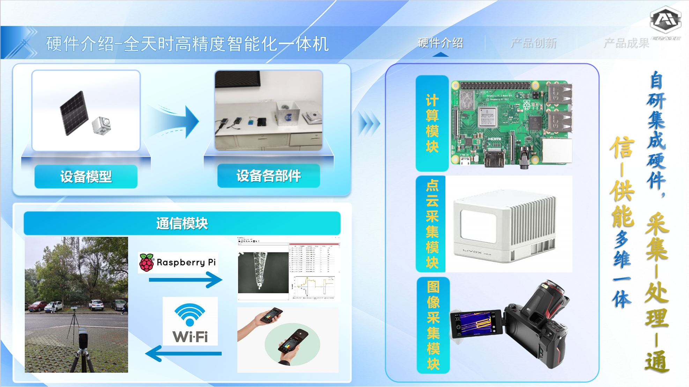
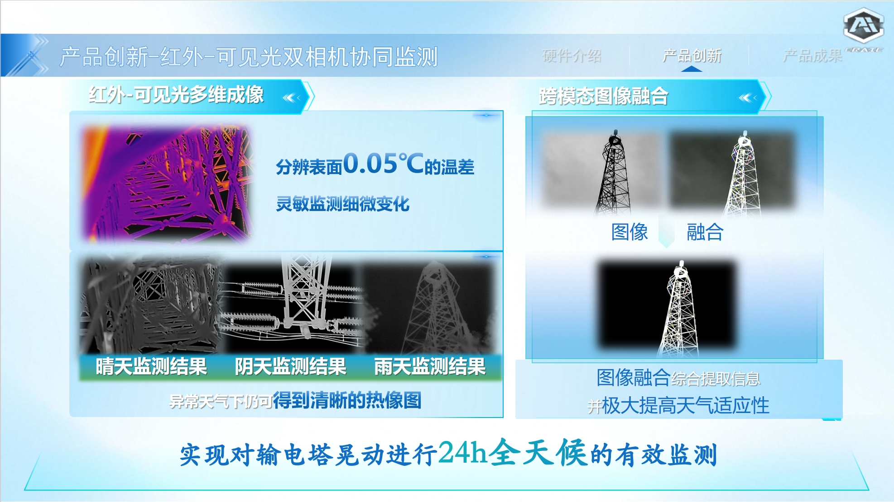
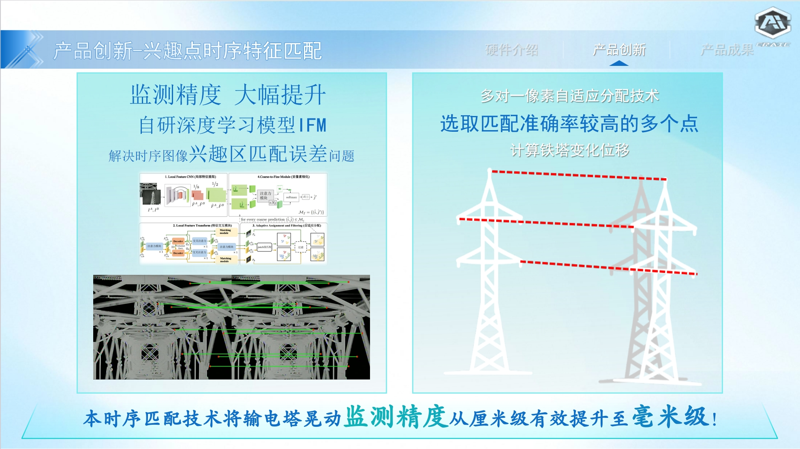
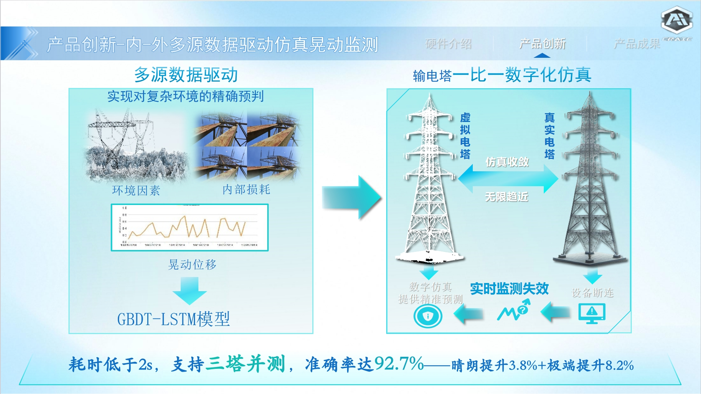
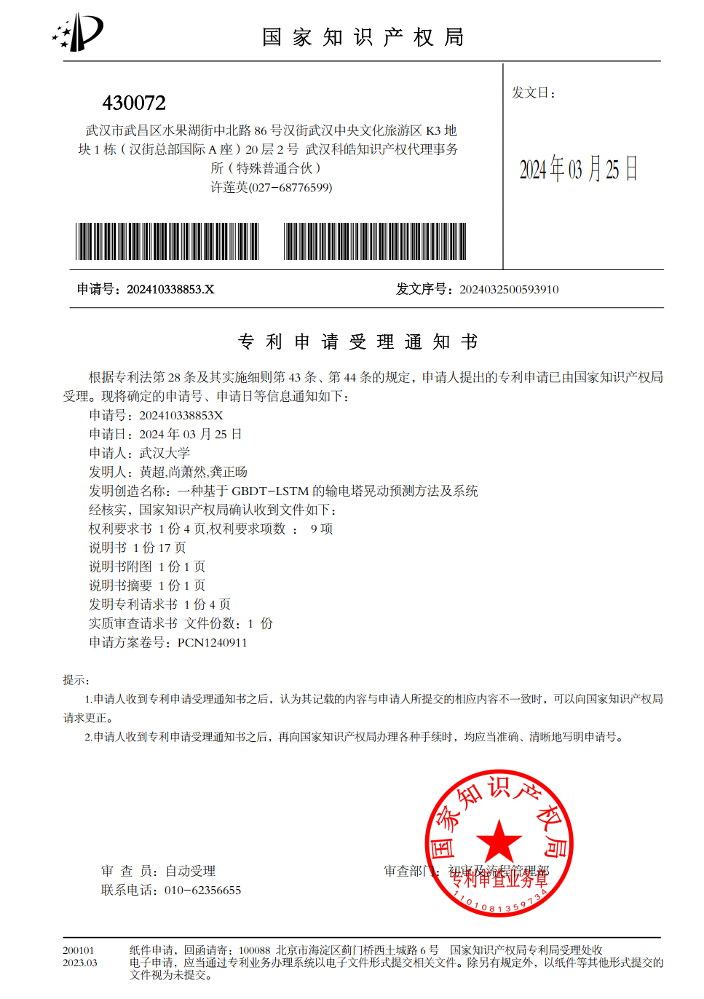
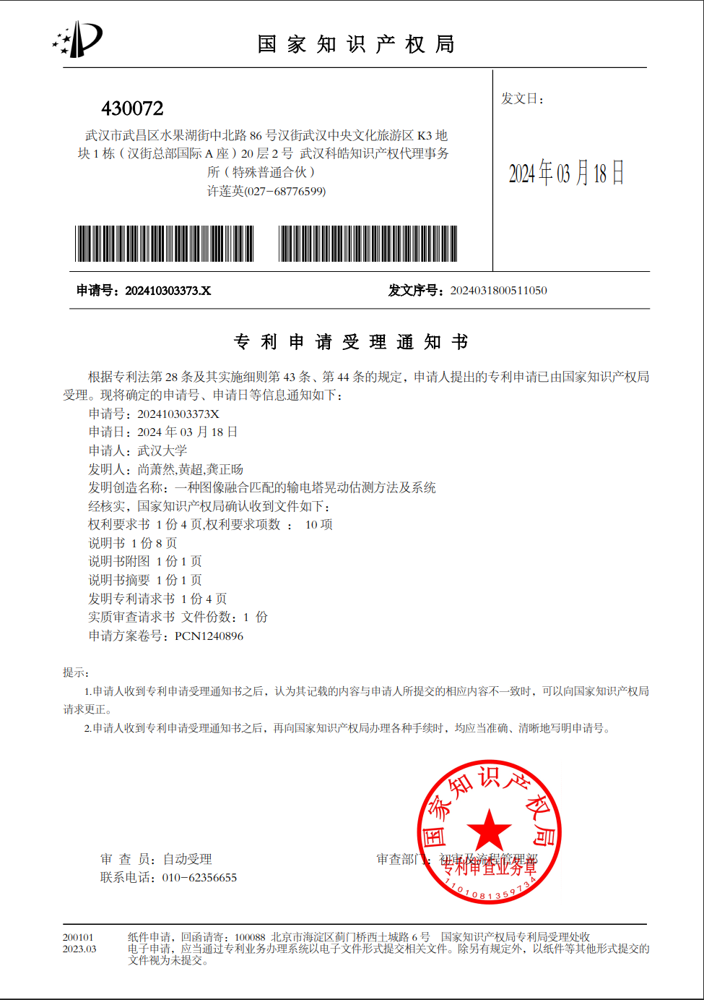

晃影赤瞳 是一套专为输电塔晃动监测设计的智能预警系统，集软硬件于一体，致力于提供全天时、高精度且实时的监控与预警解决方案。通过结合红外成像、可见光相机以及激光雷达等多种传感器，系统能够实现对输电塔的多源协同感知，显著提高监测精度和响应速度。
ST-DcGAN图像融合模型：实现红外与可见光图像的高效融合，提高图像质量和分析精度。
Harris角点检测算法：精确识别输电塔上的关键监测点，为晃动分析提供基础数据。
IFM时序匹配模型：通过时间序列分析，实现对输电塔晃动的精确追踪与量化。
GBDT-LSTM预测模型：基于历史数据，预测输电塔的晃动趋势，提前发出预警信号。
红外-可见光双摄集成监测终端：实现全天候监测，不受光照条件限制，保证监测的连续性。
激光雷达：提供高精度的距离测量，辅助定位输电塔的空间位置变化。
集成边缘计算单元：实现本地化的数据处理，减少传输延迟，提高响应速度。
环境适应性设计：设备具有防尘、防水、耐高低温等特性，适应各种恶劣环境。
通过红外、可见光和激光雷达的协同工作，实现全天候、全方位的监测能力，有效克服单一传感器的局限性。
创新性的ST-DcGAN模型能够将不同模态的图像数据进行智能融合，提取更多有效信息，增强监测效果。
通过IFM时序匹配模型，能够精确追踪输电塔关键点的时间序列变化，实现毫米级的晃动测量。
结合GBDT和LSTM的混合模型，利用多源数据进行智能预测，为潜在的安全风险提供提前预警。
晃影赤瞳智能预警系统的应用场景广泛，主要包括以下几个方面：
晃影赤瞳智能预警系统通过高度集成的软硬件解决方案，为电力行业提供了一个可靠、精确且智能的输电塔监控工具，具有广阔的市场前景和社会价值：
以下展示了我们项目的部分技术成果：
一种基于GBDT-LSTM的输电塔晃动预测方法及系统
一种图像融合匹配的输电塔晃动估测方法及系统
输电塔晃动智能监测数据管理平台

部分合作成果：
 项目代码
项目代码